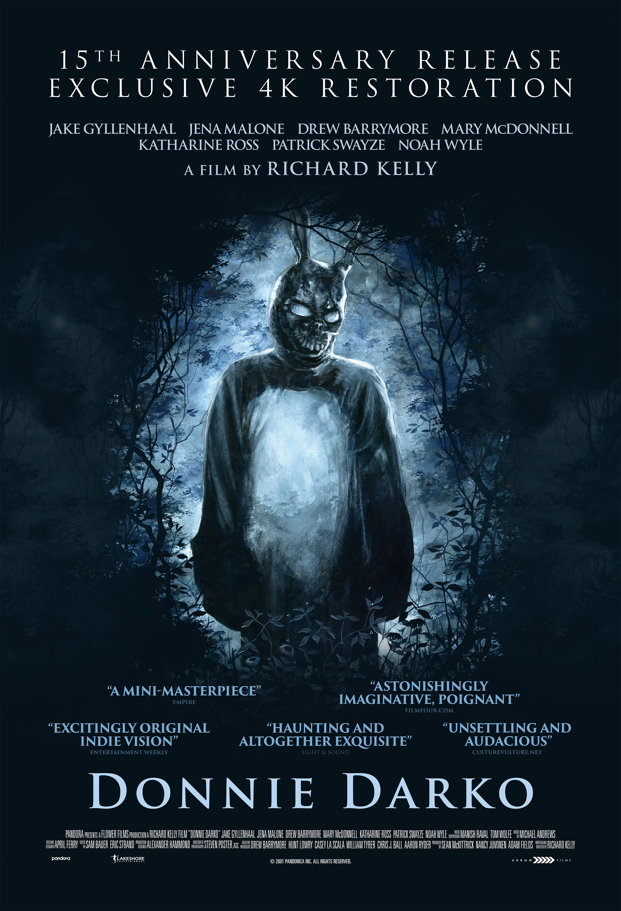

Derniers articles
[Critique] L'armée des 12 singes (1996)

[Critique] Arnaques, Crimes et Botanique (1998)

[Critique] L'Attaque des Titans - Saison 1 (2013)

[Critique] Boulevard De La Mort (2007)

[Critique] Donnie Darko (2002)